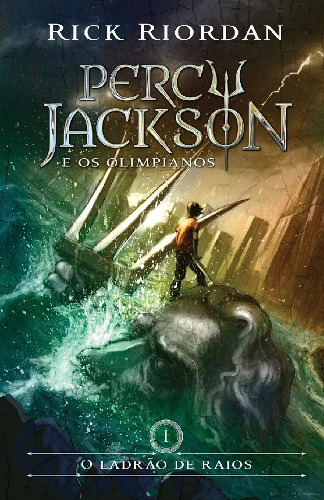

Harry Potter e a Ordem da Fênix

Sinopse
Parece impossível, mas, no bairro mais Muggle do mundo Muggle, Harry é emboscado por Dementors! Para salvar a sua vida e a do primo Dudley, Harry não tem outra hipótese senão usar magia - mesmo sabendo que isso significará a sua expulsão mais que certa de Hogwarts. Enquanto o Ministério da Magia continua a não acreditar que o terrível Senhor das Trevas está de volta, Voldemort e os seus fiéis Devoradores da Morte já começaram a preparar o seu regresso ao poder. Porém, há uma nova esperança: uma antiga ordem secreta, da qual os pais de Harry fizeram parte, voltou a organizar-se e Dumbledore está atento.
Fonte: Google Books
| Data |
Autor |
Idioma Original |
Gêneros |
Número de Páginas |
Editora |
| 21 de junho de 2003 |
J.K. Rowling |
Inglês |
Romance, Ficção juvenil, Literatura fantástica |
750 |
Pottermore Publishing |
O Senhor dos Anéis: A Sociedade do Anel

Sinopse
A Sociedade do Anel começa no Condado, a região rural do oeste da Terra-média onde vivem os diminutos e pacatos hobbits. Bilbo Bolseiro, um dos raros aventureiros desse povo, cujas peripécias foram contadas em O Hobbit, resolve ir embora do Condado e deixa sua considerável herança nas mãos de seu jovem parente Frodo. O mais importante legado de Bilbo é o anel mágico que costumava usar para se tornar invisível. No entanto, o mago Gandalf, companheiro de aventuras do velho hobbit, revela a Frodo que o objeto é o Um Anel, a raiz do poder demoníaco de Sauron, o Senhor Sombrio, que deseja escravizar todos os povos da Terra-média. A única maneira de eliminar a ameaça de Sauron é destruir o Um Anel nas entranhas da própria montanha de fogo onde foi forjado. A revelação faz com que Frodo e seus companheiros hobbits Sam, Merry e Pippin deixem a segurança do Condado e iniciem uma perigosa jornada rumo ao leste. Ao lado de representantes dos outros Povos Livres que resistem ao Senhor Sombrio, eles formam a Sociedade do Anel. Alguém uma vez disse que o mundo dos leitores de língua inglesa se divide entre os que já leram O Senhor dos Anéis e os que um dia lerão o livro. Com esta nova tradução da obra, o fascínio dessa aventura atemporal ficará ainda mais evidente para os leitores brasileiros, tanto os que já conhecem a saga como os que estão prestes a descobrir seu encanto.
Fonte: Google Books
| Data |
Autor |
Idioma Original |
Gêneros |
Número de Páginas |
Editora |
| 29 de julho de 1954 |
J.R.R. Tolkien |
Inglês |
Literatura fantástica, Alta fantasia, Ficção de aventura, Romance de cavalaria, Fantasia heroica |
576 |
HarperCollins Brasil |
Percy Jackson e o Ladrão de raios

Sinopse
O autor conjuga lendas da mitologia grega com aventuras no século XXI. Nelas, os deuses do Olimpo continuam vivos, ainda se apaixonam por mortais e geram filhos metade deuses, metade humanos, como os heróis da Grécia antiga. Marcados pelo destino, eles dificilmente passam da adolescência. Poucos conseguem descobrir sua identidade. O garoto-problema Percy Jackson é um deles. Tem experiências estranhas em que deuses e monstros mitológicos parecem saltar das páginas dos livros direto para a sua vida. Pior que isso: algumas dessas criaturas estão bastante irritadas. Um artefato precioso foi roubado do Monte Olimpo e Percy é o principal suspeito. Para restaurar a paz, ele e seus amigos – jovens heróis modernos – terão de fazer mais do que capturar o verdadeiro ladrão: precisam elucidar uma traição mais ameaçadora que fúria dos deuses.
Fonte: Google Books
| Data |
Autor |
Idioma Original |
Gêneros |
Número de Páginas |
Editora |
| 28 de junho de 2005 |
Rick Riordan |
Inglês |
Romance, Mitologia grega, Fantasia, Literatura fantástica, Ficção juvenil, Alta fantasia |
387 |
Editora Intríseca |
Eragon
Sinopse
Fifteen-year-old Eragon believes that he is merely a poor farm boy--until his destiny as a Dragon Rider is revealed. Gifted with only an ancient sword, a loyal dragon, and sage advice from an old storyteller, Eragon is soon swept into a dangerous tapestry of magic, glory, and power. Now his choices could save--or destroy--the Empire.
Fonte: Google Books
| Data |
Autor |
Idioma Original |
Gêneros |
Número de Páginas |
Editora |
| 26 de agosto de 2003 |
Christopher Paolini |
Inglês |
Fantasia, Literatura fantástica, Ficção científica, Ficção juvenil, Alta fantasia, Bildungsroman, Ficção distópica |
528 |
Corgi Books |
Jogador número 1
Sinopse
"Cinco estranhos e uma coisa em comum: a caça ao tesouro. Achar as pistas nesta guerra definirá o destino da humanidade. Em um futuro não muito distante, as pessoas abriram mão da vida real para viver em uma plataforma chamada Oasis. Neste mundo distópico, pistas são deixadas pelo criador do programa e quem achá-las herdará toda a sua fortuna. Como a maior parte da humanidade, o jovem Wade Watts escapa de sua miséria em Oasis. Mas ter achado a primeira pista para o tesouro deixou sua vida bastante complicada. De repente, parece que o mundo inteiro acompanha seus passos, e outros competidores se juntam à caçada. Só ele sabe onde encontrar as outras pistas: filmes, séries e músicas de uma época que o mundo era um bom lugar para viver. Para Wade, o que resta é vencer - pois esta é a única chance de sobrevivência. A vida, os perigos, e o amor agora estão mais reais do que nunca."
Fonte: Google Books
| Data |
Autor |
DIdioma Original |
Gêneros |
Número de Páginas |
Editora |
| 16 de agosto de 2011 |
Ernest Cline |
Inglês |
Romance, Ficção científica, LitRPG, Literatura fantástica, Ficção distópica |
374 |
Crown Publishers |